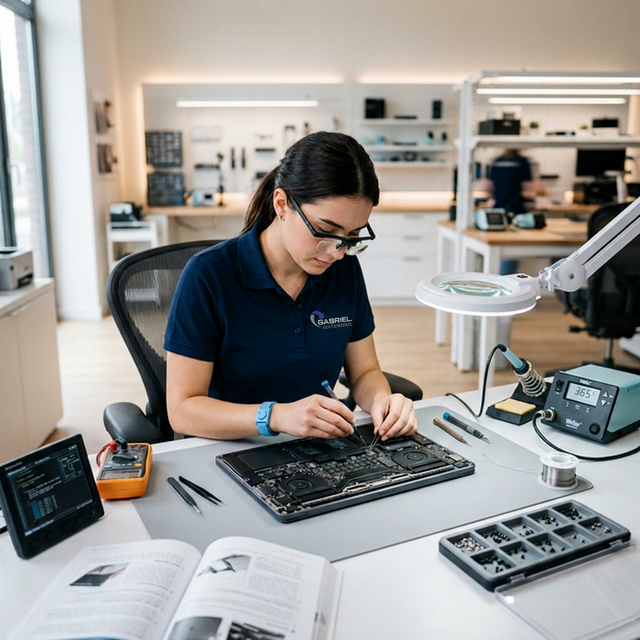
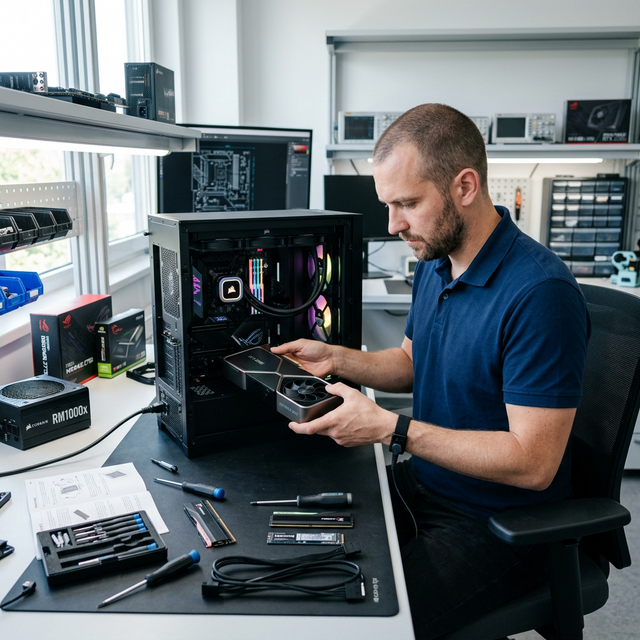
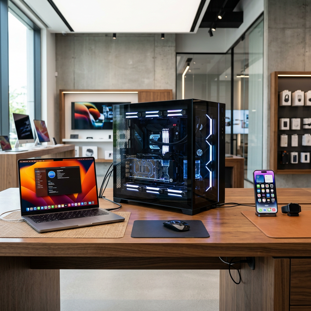
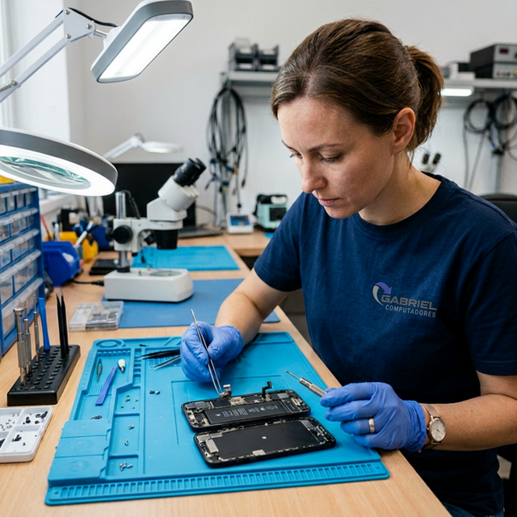
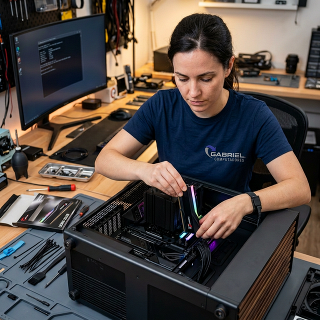
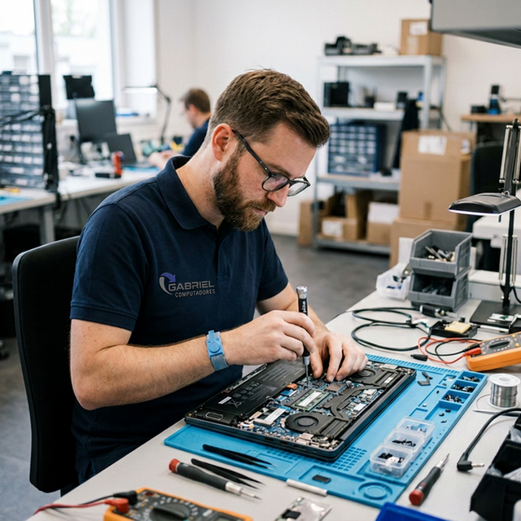

Temos a solução completa para você! Nosso orçamento é gratuito.
Equipamentos prontos no menor tempo possível sem perder a qualidade.
Todos os nossos serviços possuem garantia para sua tranquilidade.
Equipe técnica constantemente atualizada no mercado.
Especialistas em consertos multimarcas para prolongar a vida útil do seu equipamento.

Se você vai montar um PC e precisa de uma configuração específica para sua necessidade, nos procure que iremos atendê-lo(a) prontamente.
Saber maisCompramos computadores / notebooks com ou sem defeito. Vendemos equipamentos novos e usados com garantia.
Saber mais
Se o seu computador ou notebook não está funcionando adequadamente, nós temos a solução ! estamos a mais de 15 anos no mercado.
Saber mais
Troca de tela, bateria, conector de carga, reparo na placa ou outro defeito, estamos sempre a disposição para resolver.
Saber mais
Seu Computador está lento ou travando? podemos melhorar o desempenho fazendo uma limpeza completa dos componentes, adicionando memória RAM, HD SSD dentre outros.
Saber maisSomos especialistas em montagem de PC Gamer personalizado. Compre conosco ou traga as peças até a nossa loja e nós montamos com precisão profissional: cable management, aplicação de pasta térmica, instalação de sistema, drivers e testes de estabilidade.
Saber maisSomos uma Assistência Técnica localizada no Parque Atheneu, Goiânia, GO, especializada em Computadores de mesa (desktop), smartphones, Notebook, Netbook, ultrabook, All in One, Servidor, Apple Macbook Pro e Air, iMac e Monitor, com mais de 15 anos de experiência.

Profissionais certificados, apaixonados por tecnologia e comprometidos com a excelência no atendimento
Reparo de Computadores, Notebooks e Servidores
Especialistas com mais de 15 anos de experiência em diagnóstico avançado, reparo de placa-mãe, troca de componentes, soldagem BGA e recuperação de dados. Capacitados para atender equipamentos de todas as marcas, incluindo Apple.
Reparo de Celulares e Tablets
Profissionais treinados em troca de tela, bateria, conector de carga e reparo em placa de celulares das principais marcas. Atualizados com as técnicas mais modernas do mercado mobile.
Gestão Administrativa e Relacionamento com o Cliente
Equipe dedicada ao atendimento humanizado, orçamentos transparentes e acompanhamento de cada serviço. Garantimos comunicação clara e agilidade desde a entrada até a devolução do seu equipamento.
Terceirize sua área técnica e concentre-se no que a sua empresa faz de melhor. Nós cuidamos da tecnologia para você!
Leve nossos profissionais para trabalhar na sua empresa. Terceirize toda sua área técnica de TI com a Gabriel Computadores e tenha suporte contínuo, preventivo e corretivo.
Atendemos órgãos públicos municipais, estaduais e federais com excelência. Nossa empresa está preparada para licitações, pregões e contratos diretos com a administração pública.
Artigos, tutoriais e dicas para cuidar melhor dos seus equipamentos
Guia completo: da escolha das peças à montagem profissional. Traga suas peças e nós montamos!
Ler artigoCuidados simples que prolongam a vida do seu notebook e evitam gastos desnecessários.
Ler artigoSinais de alerta, diferença entre tela original e compatível, e tempo de troca.
Ler artigoEntenda por que o upgrade para SSD é o melhor investimento para seu computador.
Ler artigoDescubra o que está deixando seu PC lento e como resolver cada problema.
Ler artigoDicas essenciais de segurança digital contra vírus, ransomware e golpes online.
Ler artigoAs causas mais comuns de falha na impressão e quando procurar assistência.
Ler artigoQuando vale a pena reparar e quando é melhor investir em um equipamento novo.
Ler artigoAprenda a proteger seus arquivos com a regra 3-2-1 e nunca mais perca dados.
Ler artigoEntenda como a manutenção preventiva evita gastos maiores e mantém o desempenho.
Ler artigoSaiba qual peça trocar primeiro e como manter seu setup sempre competitivo.
Ler artigoLimpeza, temperatura, pasta térmica e cuidados para seu gamer durar muito mais.
Ler artigoFale Conosco! Pelo Canal de atendimento ao cliente estamos disponíveis para atendê-lo(a) da melhor forma.
(62) 3988-4363Tire suas dúvidas sobre nossos serviços de assistência técnica
O valor da troca de tela varia de acordo com o modelo e a marca do aparelho. Trabalhamos com peças de qualidade original e compatíveis para garantir o melhor custo-benefício. Na Gabriel Computadores, o orçamento é totalmente gratuito e sem compromisso.
Solicitar OrçamentoServiços simples como formatação e limpeza geralmente são concluídos no mesmo dia. Reparos com troca de componentes podem levar de 1 a 5 dias úteis. Sempre comunicamos o prazo antes de iniciar.
Consultar PrazoSim! Somos especialistas em produtos Apple: MacBook Pro, MacBook Air, iMac e Mac Mini. Realizamos troca de bateria, tela Retina, teclado, upgrade de SSD/RAM e reparo em placa-mãe.
Pedir Assistência AppleAvaliamos seu equipamento e identificamos gargalos. Recomendamos melhorias como SSD (até 10x mais rápido), aumento de RAM, limpeza interna e troca de pasta térmica. Seu computador fica com desempenho muito superior!
Quero Fazer UpgradeCom certeza! Serviços de software possuem garantia de 30 dias; troca de componentes como tela, bateria e RAM possuem garantia de 90 dias. Você recebe laudo técnico detalhado.
Saber Sobre GarantiaSim! Contratos personalizados para empresas privadas e órgãos governamentais, com suporte presencial/remoto, manutenção preventiva, gestão do parque tecnológico e SLA garantido.
Solicitar PropostaRua 9 Lote 48 Unidade 201, Parque Atheneu, Goiânia – GO, CEP 74890-230. Ponto de referência: em frente ao Colégio San Damiano. Seg a Sex 09:00–18:00, Sáb 09:00–12:00.
Como ChegarSim! Compramos computadores e notebooks com ou sem defeito, com avaliação justa. Também vendemos equipamentos novos e seminovos com garantia.
Avaliar EquipamentoSim! Somos especialistas em montagem de PC Gamer. Você compra as peças, traz até nossa loja e nós fazemos a montagem completa com cable management, aplicação de pasta térmica, instalação do sistema operacional, drivers atualizados e testes de estabilidade e temperatura. Mais de 15 anos de experiência!
Montar Meu PC GamerDepende do seu objetivo e orçamento. Para jogos leves, um notebook com Ryzen 5 e GTX 1650 já atende. Para jogos pesados, recomendamos modelos com RTX 4060 ou superior, 16GB+ de RAM e SSD NVMe. Na Gabriel Computadores, fazemos upgrade de notebooks gamer com SSD, RAM e limpeza para manter a performance no máximo.
Consultoria Gamer